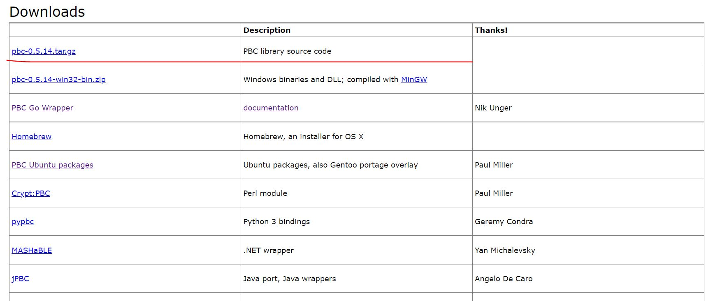

fabric使用备忘
自己写的SDK的使用方法
1 | cd fixtures && ./run.sh |
文件存放位置
1 | /home/demo/go/src/test/fixtures |
运行脚本
1 | # 运行改脚本能够快速组件网络 |
关闭脚本
1 | # 关闭通过运行脚本开启的网络 |
进入docker容器
1 | docker exec -it cli1 bash |
go sdk的使用
ubuntu中配置golang环境下的pbc库
- 更新源
1 | sudo cp /etc/apt/sources.list /etc/apt/sources.list.bak # 备份 |
- 配置相应的依赖库
1 | sudo apt-get update |
- 下载GNU
1 | # 网站下载gmp-6.2.1.tar.lz |
- 安装依赖
1 | sudo apt-get install libgmp-dev |
- 编译

1 | # 注意这里安装的是源代码 |
- pbc使用
1 | cd /home/demo/Desktop/pbc-0.5.14/pbc |
- 关于
docker环境配置
1 | # 创建容器 |
本博客所有文章除特别声明外，均采用 CC BY-NC-SA 4.0 许可协议。转载请注明来源 Demon Home！